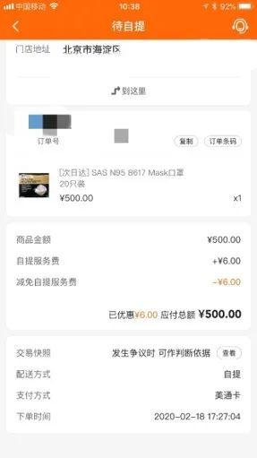

口述实录 | 起初还有点小心思，现在我的小货车已经“停”不下来了
原文链接 备份链接 经过这次疫情，我对《我不是药神》这部电影感触特别深。我明白了平时物资储存的重要性，这样在特殊时期才能派上大用场。 口述 | 赵 勐 整理 | 王仲昀 我叫赵勐，干物流行业的。大年初一下午，我一个人在家睡觉。醒来看到微信 …

本报记者 许礼清 李向磊 北京报道
销售过期8年之久和无生产日期的口罩，北京物美商业集团股份有限公司（以下简称“物美”）被推上舆论的风口浪尖。
据不完全统计，售卖问题口罩的物美门店超过17家，其中包括物美的大店、品超等多种门店类型。售卖过期8年口罩的门店有14家，售卖无生产日期口罩的门店有5家，有2家门店同时售卖过期和无生产日期口罩。消费者自发组织的维权群，人数已经超过了50人。根据消费者自发统计的数据，涉事金额已经超过1万元。
目前物美官方并无关于全部“问题口罩”销售规模的数据流出。但根据物美内部人士透露，物美某店共销售口罩16盒，截至2月21日，仅有1名消费者向该店提出了退货要求，其他15盒口罩的购买者并无消息。
不仅仅是过期口罩，据消费者反映，物美销售的另外两款口罩还存在“无生产日期”等问题。
“目前口罩是高周转商品，若出现这样的问题，应该不是门店库存积压造成的过期，而是采购源头出了问题。在这个时期，物美可能是为了抢货源就放松了要求，采购在找供应商、审核供应商资质、商品质量把关方面不严谨，仓储部门和门店验收也不严谨。”零售专家黄静告诉《中国经营报》记者，按照正常情况，过期的货品根本就不能收进来，更不能上架销售。因此，根源还是物美内部管理的问题。
就多位消费者反映的上述情况、采购销售方面的具体流程操作、应急物品采销流程是否精简、“过期口罩”事件如何处理等问题，记者多次联系物美相关负责人，截至发稿，物美方面并未对以上问题进行正面回复。

销售过期口罩
近日，多位在物美抢购口罩的消费者向《中国经营报》记者爆料称，自己在多点APP上抢购的SAS N95 8617 Mask口罩出现“2009年生产保质期到2012年，保质期被人为遮挡”的情况；Scotts Maksks ASTM口罩、Prestige Ameritech Face Masks医用口罩则出现“无生产日期、包装简陋、口罩不是独立包装、打开盒子直接可以看见口罩”等情况。
在多点APP上抢到口罩的王先生（化名）向记者表示，他于2月18日在多点上花费500元购买了一盒SAS N95 8617 Mask口罩，该盒口罩一共20只。根据和物美的约定时间，王先生在20日早上8点到清河门店自提。
“抢到口罩后，会收到客服发的短信和自提时间，然后拿着短信去物美超市排队领取，工作人员直接一人发一盒。因为自提的时间不一样，我去的时候比较早，没有几个人排队，但是每个时间段的货都被抢光售罄。”王先生告诉记者。
根据王先生的说法，尽管口罩的价格比较高，但因为害怕买到劣质口罩起不到防护作用，才选择在物美多点上下单抢购。但让他意外的是，将口罩拿回家才发现已经过期8年。根据王先生提供的图片，记者发现，在王先生购买的口罩包装盒底部贴了一张写有“Lot No：09180”的标签，透过标签隐约能看到纸条下方有类似时间的数字标识。王先生揭开标签发现，上面写着生产日期为2009年6月，而截止使用日期是2012年6月。这样算来，这盒口罩已经过期近8年之久。

撕开标签，能够看到生产日期是2009年6月，而截止使用日期是2012年6月。 受访者供图
在消费者自发组织的维权群里，记者了解到，和王先生同样购买到“问题口罩”的还有50多人，购买到的产品或过期或无生产日期。
据消费者不完全统计，物美新风店、物美志新店、物美小汤山店、物美清河店、物美中关村店、物美玉林里店、物美玉蜓桥店、顺义仁和美廉美店、物美木樨园店、物美太阳岛店、美廉美百旺店、物美杜家坎店、通州物美西门店、物美潞苑店14家门店售卖已过期的售价500元/盒（20只装）SAS N95 8617 Mask口罩；
通州物美西门店、物美清河店、物美光明桥西店、物美宋庄店4家门店售卖无生产日期的售价445元/盒（50只装）Prestige Ameritech Face Maskks医用口罩；
通州物美西门店、物美清河店、美廉美管庄店3家门店售卖无生产日期的260元/盒（50只装）的Scotts Maksks ASTM口罩。
另根据《中国消费者报》报道，昌平美廉美超市回龙观二店也有售卖SAS N95 8617 Mask口罩。

Prestige Ameritech Face Maskks医用口罩和Scotts Maksks ASTM口罩均无生产日期。 受访者供图
根据物美内部人士透露，物美某店共销售口罩16盒，但截至2月21日，仅有1名消费者向该店提出了退货要求，其他15盒口罩的购买者并无消息。

消费者均在多点APP下单，然后门店自提。 受访者供图
多数消费者要求物美退货、赔偿、公开道歉。有购买物美口罩的消费者告诉记者：“自己明确表示不接受只退款的处理方式，但接到客服电话被通知后台直接退款了，对于额外诉求客服表示会向上面反映，但对方未说收回口罩，再联系时，电话显示没有拨打权限，店面座机一直占线。”截至记者发稿，有不少消费者表示已被“强制退款”。但对于赔偿、公开道歉等要求，物美方面并无回应。
对于退换货、口罩召回、问题源头自查等后续处理问题，记者多次以各种方式联系物美相关负责人，均未得到回复。
哪个环节出了问题？
“在特殊时期，口罩等应急产品的采销，企业应该会有应急方案，不可能按照常规采销流程进行。”多年从事采购工作的业内人士告诉记者。但是否有应急方案，记者并未从物美方面得到相应证实。不过，黄静表示：“在不少消费者持续反馈的背后，或许透露着物美内部管理的种种问题。”
零售管理专家胡春才告诉《中国经营报》记者，常规情况下，零售企业的整个采销流程是一个严格且漫长的过程。
据了解，在正常的零售企业采购流程中，一般是品类部门确定产品，采购部门通过招标等方式确定供应商，敲定价格之后签订合同、开设条码，每一步都要经过严格的层层审批。采购工作完成后，品类、营运部门要确定哪些门店适合销售新品，再由门店或者采购下单，供应商一般会根据订单向企业的配送中心或者门店发货。
“像口罩这种应急产品，不可能按照常规方式进行采销，因为终端等不及。也不可能精简掉某个流程，所以就加快流程，但很容易出错。”胡春才说。
“供应商给企业的配送中心发货，采购部门或许无法看到全部商品，但是配送中心在收货的时候有验货环节，会对每个商品进行检验是否合格、有无破损等情况，但都是通过外包装进行检查。检验产品无误后再配送给各个门店，门店在收货的时候也会进行再次检验，日常的销售中也有货架商品的例行检查工作。”胡春才说，按照行业的普遍标准，超过保质期三分之一的货物，配送中心就不会收货，超过保质期一半时间就不再向门店配送。对于遮挡生产日期的行为，他认为可能是供应商所为。
按照胡春才的说法，经过层层的验货工作之后，商品出现过期等问题应该可以避免，但为何还出现销售过期近8年之久的商品？对此，记者多方联系物美方面，截至发稿，物美方面并未就此事进行回复。
不过记者以消费者身份从门头沟龙湖店客服人员处了解到，“出事”的产品是由消费者从多点下单，仓储中心直接发货到门店，然后消费者到下单的门店直接自提，门店并未上架商品。“包装上都是外国文字，咱们也看不懂。”
另外，据记者了解，对于其他非“涉事”口罩，也有消费者表示想要退货。
在当下的消费环境中，尤其是企业陆续复工，像口罩这样的基本防护用品属于刚需物资，但货源又十分紧俏。胡春才告诉记者，针对疫情期间需求量大的商品，公司采用应急机制，从而简化了采购流程的情况也是可能存在的。以上述门店为例，该门店就简化了上架的过程。记者还了解到，口罩的采购属于清洁课组，其常规的采购销售的流程如何，此次是否简化流通环节尚无从知晓。
对于消费者反映的上述口罩问题，记者致电国家市场监管总局，相关负责人表示，根据《市场监管总局等八部门关于开展打击整治非法制售口罩等防护产品专项行动的紧急通知》，市场监管部门和药监部门会同有关部门会重点打击生产销售无生产日期、厂名厂址、产品质量合格证明等三无产品以及冒用认证标志等质量标志的行为，商标侵权、假冒专利、仿冒混淆、虚假宣传和虚假广告的行为。
（编辑：刘旺 校对：颜京宁）


推荐阅读
点击大图 |从1到634！“钻石公主”号成病毒“培养皿”，日本应对错在哪？
点击大图 |朱新礼“谢幕” ：汇源黯别资本市场

原文链接 备份链接 经过这次疫情，我对《我不是药神》这部电影感触特别深。我明白了平时物资储存的重要性，这样在特殊时期才能派上大用场。 口述 | 赵 勐 整理 | 王仲昀 我叫赵勐，干物流行业的。大年初一下午，我一个人在家睡觉。醒来看到微信 …
原文链接 备份链接 河北医科大学第二医院麻醉科ICU护士 朱君宇 澎湃新闻记者 吕新文 2月21日，第八批河北省援鄂医疗队 175人又踏上了征程，至此，河北省共派出了1036名医护人员驰援湖北。 新冠肺炎的爆发，让我们度过了一个百感交集 …
原文链接 备份链接 医护人员冲锋在一线有需要，我们国企和其他企业就要一起做好后勤保障工作，挑起企业抗击疫情的责任担当，相信众志成城、共克时艰不是一句空话，大家一起努力，疫情终将过去，一切都会好起来。 口述 | 周 道 整理 | 周 洁 小 …
原文链接 备份链接 “ - 疫 情 之 下 - 外面没有好消息，我们市里有两例确诊了，他们都是从武汉回来！我不敢把任何不好的消息告诉爸爸，怕他心理负担重。 ” 1 2020年1月18日，公司年会，这一天大家跟往年一样——总结，去食堂吃午 …
原文链接 备份链接 你印象中的武汉是什么样的？ 这座位于华中地区的省会城市充满着生命力，夏天够热，热干面是他们最常见的美食，闲下来的老人们会聚在街头巷尾打牌，春节是他们最热闹的节日，有归乡的年轻人，有早早就置办年货的老人，有火红的对联和热 …